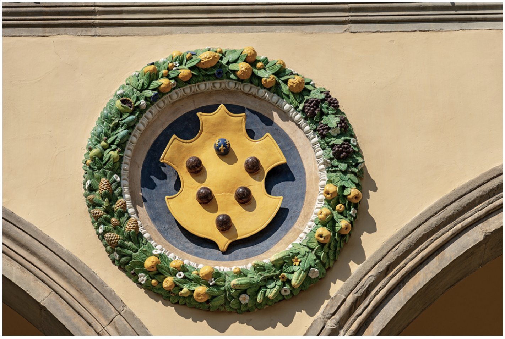

A Fatal Crime in Florence, February 1497
A murder has been committed in Florence during the height of Carnival, 1497. A prominent merchant lies dead in the streets, and five powerful historical figures are under suspicion. Your task is to examine the evidence, study the suspects, and solve this Renaissance mystery.
The Renaissance in Italy was a time of extraordinary cultural achievement—breathtaking art, magnificent architecture, and groundbreaking literature. But it was also an era of fierce political intrigue, where wealthy families competed ruthlessly for power through marriage, deception, and assassination.
Florence, ruled by the powerful Medici banking family, stood at the center of both artistic brilliance and political chaos. Italy was fractured into competing city-states, making it vulnerable to foreign invasion and internal betrayal.
The murder described in this activity is FICTIONAL, created as a teaching tool. However, all five suspects are REAL historical figures, and all the facts presented about them are historically accurate. Use your knowledge of Renaissance politics, culture, and these historical figures to solve the mystery!
Occupation: Wealthy wool merchant
Family: Married with several children
Background:
Location: Narrow passageway off Via dei Cerchi, central Florence
Time: During Carnival festivities, February 1497
Cause of Death: Multiple stab wounds to the chest
Witness Account: One eyewitness saw two men in black cloaks leap from the passageway, drag Conti inside, and murder him. They searched his satchel but fled northward when the witness shouted. The Carnival festivities masked their escape.
A painting depicting a scene from Roman mythology by the artist Botticelli, found lying next to the victim in the street.
A copy of the Book of Micah (Old Testament) found in the victim's satchel.
A letter addressed to the victim. Only the final sentence remains:
"...and so despite your previous refusals, I must ask you once more for the loan I so desperately require."
The letter bears the official Medici family coat of arms.
Another partial letter found in an envelope. The final legible sentence reads:
"...now that he knows about us, we must save the child. You must see to it that he becomes one of the Angels of H..."
Signed: "L.B."
Map location: Near Piazza della Signoria, central Florence
The crime occurred very close to Florence's main public square, where major civic events took place.
Several witnesses were interviewed following the murder. Their accounts provide additional context about the victim and the evening of the crime:
"I saw Giuseppe earlier that evening at the Cathedral. He seemed nervous, clutching his satchel tightly. He told me he had 'important business' to attend to during the festivities. When I asked what kind of business one conducts during Carnival, he simply said it was a matter of conscience and walked away quickly toward the Piazza."
"Signor Conti visited our convent three weeks ago, asking about provisions for orphaned children. He seemed particularly interested in those children being raised by Friar Savonarola's followers. He made a generous donation and asked that we pray for 'the innocent caught in the schemes of the powerful.' He appeared troubled, as if carrying a great burden."
"Two foreign men came to my inn the day before Carnival. They spoke little, paid in Roman coins, and kept their faces covered. They asked many questions about the Carnival celebrations and which routes would be most crowded. One of them had a ring with a strange crest—not Florentine, I'm certain. They left before dawn on the day of the murder."
"I am the one who witnessed the attack from my window. The two men in black cloaks moved with military precision—these were not common thieves. After they stabbed poor Giuseppe, they searched his bag frantically, as if looking for something specific. When I screamed, one of them looked up at me, and I saw his face briefly. He had the bearing of a soldier or guardsman, not a street criminal. They ran north, disappearing into the Carnival crowds."
"Giuseppe commissioned a Botticelli painting from me six months ago—the very one found at the scene. He paid handsomely for it, but then last month, he came to me in distress, saying he needed to 'undo a mistake' and asking how to properly dispose of pagan artwork. I was confused, as he had always been a patron of such art. He seemed like a changed man, speaking of salvation and judgment. I told him about the bonfires Savonarola was organizing."
"I worked in the Conti household until Giuseppe dismissed all his servants last year. He said he was simplifying his life and no longer needed such luxuries. His wife was furious. Around that same time, I noticed he began receiving letters sealed with wax bearing unfamiliar crests—one looked like it might have been from Rome. He would read them privately and then burn them in the fireplace. Something had changed him."
"Giuseppe approached me last month requesting to withdraw a large sum—enough to support a child's upbringing for years. When I asked the purpose, he became evasive, saying only that he had 'obligations to fulfill' and 'a debt of honor to pay.' He also mentioned needing to make arrangements 'before it's too late.' At the time, I thought perhaps he was ill, but now I wonder if he knew he was in danger."
Click on any suspect to read their detailed profile. Pay close attention—important clues are hidden in their histories!
Radical Friar & Prophet
A fiery preacher who condemned Renaissance culture as sinful and led a religious revolution in Florence.
Exiled Ruler of Florence
Son of Lorenzo the Magnificent, fled Florence during the French invasion and plots his return to power.
King of France
The foreign invader who conquered Florence in 1494, looting its treasures and changing Italian politics forever.
The Borgia Pope
Notorious for corruption and nepotism, he wielded papal power to advance his family's political ambitions.
Daughter of the Pope
A beautiful pawn in her father's political games, married and divorced multiple times for strategic alliances.
Now it's time to put the pieces together. Who committed this murder, and why?
You've examined the evidence, studied the suspects, and built your case. Excellent detective work!
The reveal will take place during our next class meeting. Until then, continue discussing theories with your classmates and refining your arguments. The password will be provided in class when it's time to see the solution.
Make sure you've saved your theory using the "Build Your Case" tab!
The password will be provided by your instructor in class.